El Parmigiano más saludable
→ → → → → → → → → → → →
Hola, soy Gustavo, voy a ser vuestro guía para que conozcais mejor el queso Parmegiano
1
En primer lugar se calienta la leche que ha ordeñado el granjero. Después, se añade el suero injerto, un cultivo de fermentos lácteos naturales que se obtiene del resto de la elaboración del día anterior.
Buenos días Ricardo.
El queso necesita tiempo...
El queso necesita tiempo...
2
A continuación se añade el cuajo (enzima natural obtenida del estómago de los terneros lactantes) que provoca la coagulación de la leche. La leche coagulada (cuajada) se fragmenta con una curiosa herramienta con largo mango y alambres denominada “spino” en numerosos granos pequeños. Al final, los granos se depositan en el fondo del caldero formando una masa compacta. La masa caseosa se extrae del caldero y se divide en dos partes.
3
Las formas se colocan en moldes especiales llamados “fascere” durante 2 o 3 días. Por último, queda la fase de maduración, que durará 15 meses.
Un momento, vamos a ver un vídeo sobre como ordeñar una vaca

1
Los especialistas en nutrición coinciden en adjudicar al Parmesano un papel muy importante en la alimentación cotidiana y, por sus excepcionales características nutritivas, lo recomiendan en sus dietas.
Composición del queso
Hidratos
Grasas
Agua
Proteina
2
Los pediatras lo recomiendan como alimento para la infancia, debido a la riqueza y la facilidad de absorción de los elementos proteínicos, el calcio y las vitaminas utilizados en el crecimiento.
3
Ideal para deportistas, tanto en el ámbito de la competición como en el deporte no profesional, por su elevada digestibilidad. Es muy válido para la tercera edad por su alto contenido de calcio y fósforo, y de las principales vitaminas.

Hasta luego
Tres tipos de parmesano para satisfacer todos los gustos
Original
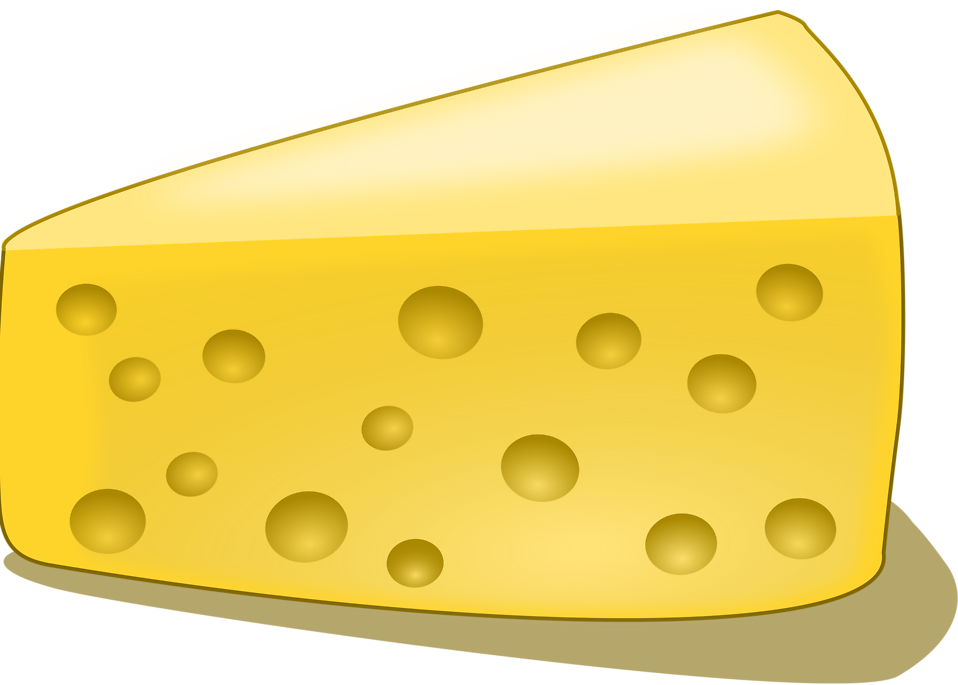
Una delicia para acompañar cualquier plato
Crema
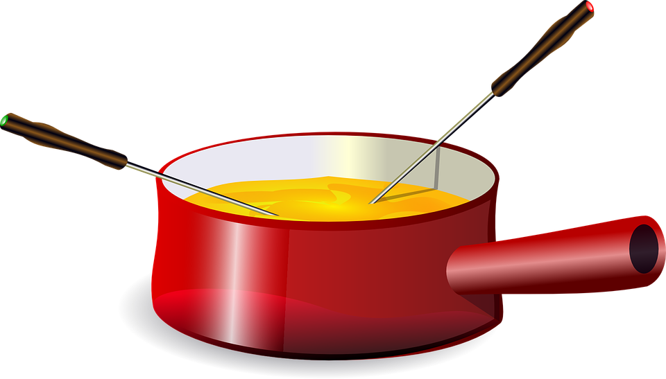
Para untar o mojar
Rayado
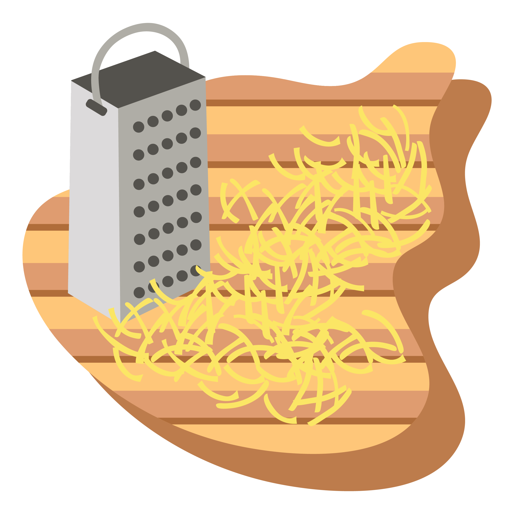
Para espolvorear sobre tus platos preferidos
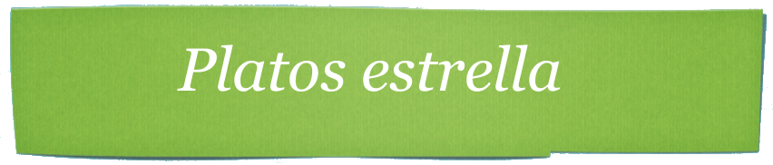
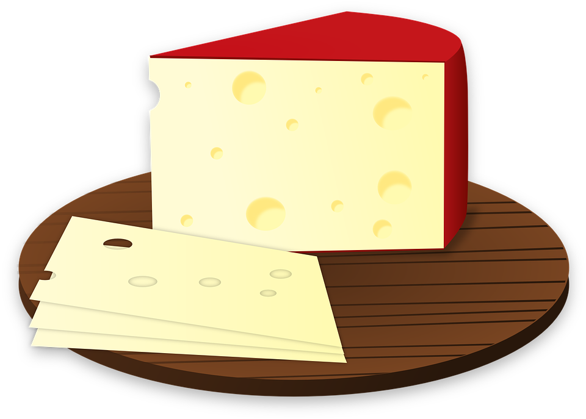
Como aperitivo
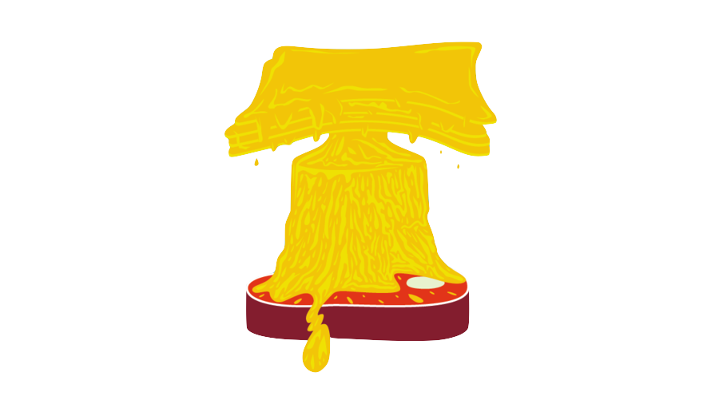
Carne con queso fundido
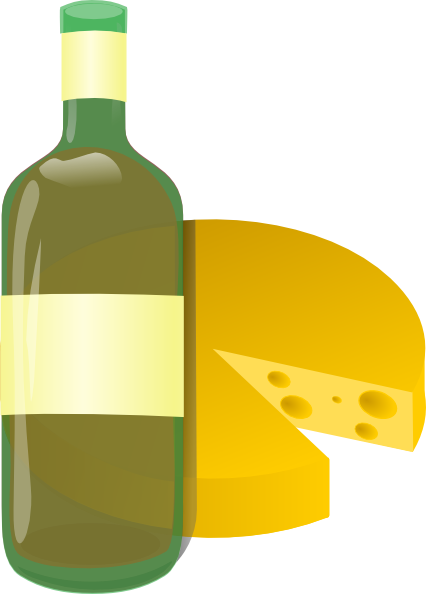
Con vino
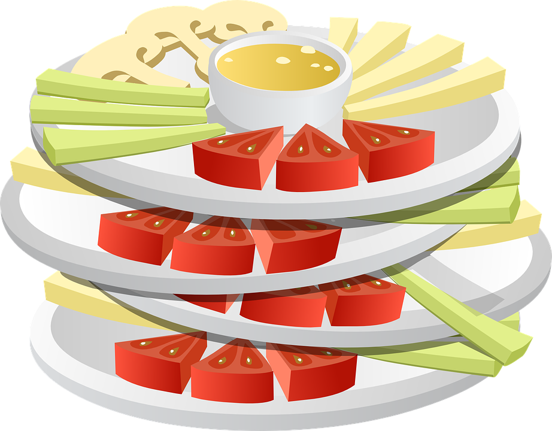
Ensaladas
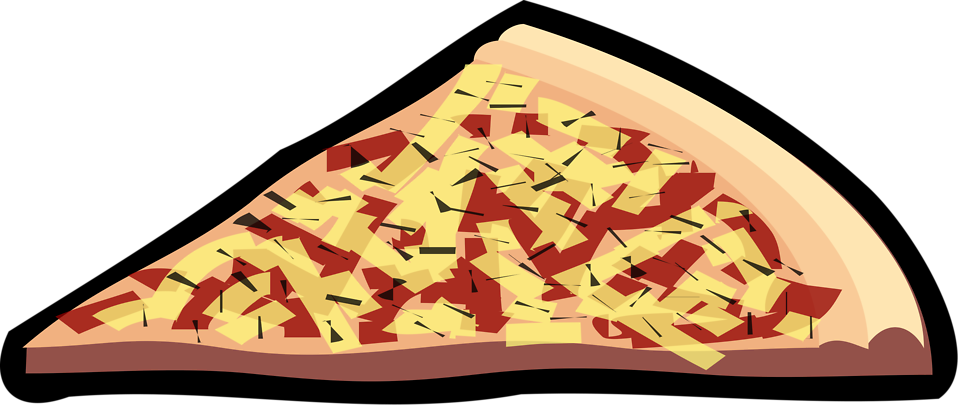
Pizzas
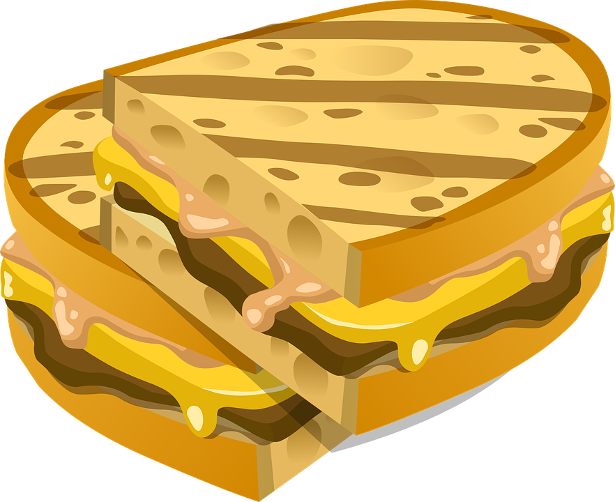
Sandwiches
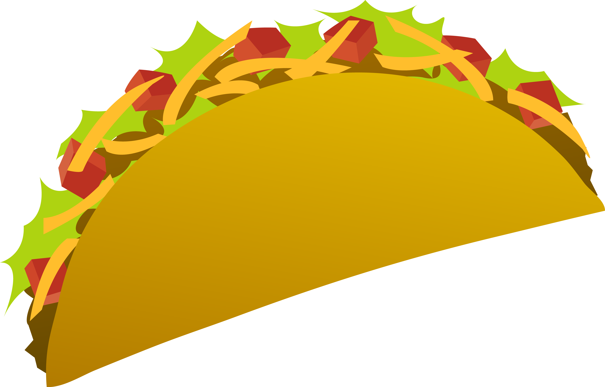
Tacos
Hola Rafa, ¿qué te parece el queso parmesano?
¡El queso Parme-Sano es ideal para deportitas! Yo lo tomo cada día y me da la suficiente energía para sacar lo mejor de mí dentro y fuera de la pista...
Composición del queso
Hidratos
Glucosa
Proteina
Grasa
Hasta luego

Stay where you are (at least for a while).